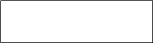
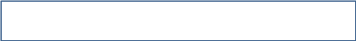

START CODE: J18CUSA8E6N062315014880T
1st) Separate code into sub categories and validate (check If 24 of size and the hours and dates):
Format Code: J18C [0, 3] “UPU identifier [0,0] + Format Identifier [1, 3]”
Issuer Code: USA [4,6]
Equipment Identifier: 8E6 [7, 9]
 Item Priority: N [10,10]
Month: 06 [11, 12]
SERIAL NUMBER
Hour: 15 [15, 16]
Minute in increments of 10: 0 [17, 17] (ranges from 0 to 5)
Item Number Part: 14880 [18, 22] (can’t be higher than 16383)
Tracking Indicator: T [23, 23]
2nd) Convert code to binary representation using these different tables
%cc = ("0" => 35, "1" => 34, "2" => 33, "3" => 32, "4" => 31, "5" => 30,
"6" => 29, "7" => 28, "8" => 27, "9" => 26, "A" => 25, "B" => 24,
"C" => 23, "D" => 22, "E" => 21, "F" => 20, "G" => 19, "H" => 18,
"I" => 17, "J" => 16, "K" => 15, "L" => 14, "M" => 13, "N" => 12,
"O" => 11, "P" => 10, "Q" => 9, "R" => 8, "S" => 7, "T" => 6,
"U" => 5, "V" => 4, "W" => 3, "X" => 2, "Y" => 1, "Z" => 0);
Predefined code conversion table for converting the Issuer Code (z to a, 9 to 0)
%pc = ("N" => "00", "L" => "01", "H" => "10", "U" => "11");
For converting the Item Priority
%tc = ("T" => "00", "F" => "01", "D" => "10", "N" => "11");
For converting the Tracking Indicator.
# J18C -> 0010 (1) / 4 bits
# USA | From the cc table: U: 5, S: 7, A: 25 | 1600*5+40*7+25 -> 0010000001110001 (2) / 16 bits
# 8E6 | Direct conversion from hexadecimal to binary -> 100011100110 (3) / 12 bits
# N | From the pc table -> 00 (4) /2 bits
# 06 23 15 0 14880 | The serial number is converted with a series of calculations |
16384 * (5120 * (06-1) + 160x23 + 6 * 15 + 0) + 14880 -> 011100101011101011101000100000 (5) / 30 b
# T | From the tc table -> 00 (6) / 2bits
RESULT is: (1).(2).(3).(4).(5 from the most significant bit count 20 bits).(6).(the rest of the bits from 5) ->
001000100000011100011000111001100001110010101110101110001000100000 /66 b
3rd) Finish the code to binary conversion
$leftsync = "010110"; #l is 22
$rightsync = "100110"; #38 decimal
Predefined codes to be inserted in the binary code.
From the least significant bit, count 12 bits and insert the rightsync:
001000100000011100011000111001100001110010101110101110100110001000100000
From the most significant bit, count 12 bits and insert the leftsync:
001000100000010110011100011000111001100001110010101110101110100110001000100000 / 78 bi
4th) Convert the binary code to decimal
Create a list of 12 zeros: {0,0,0,0,0,0,0,0,0,0,0,0}
Starting from the least significant bit, in groups of 6 bits, convert the binary groups to decimal numbers and append them to the list:
100000 -> 32
001000 -> 8
….
Final result:
{0,0,0,0,0,0,0,0,0,0,0,0, 32, 8, 38, 46, 46, 50, 33, 57, 24, 28, 22, 32, 8} / 13 non zero numbers
Then, until the list has exactly 63 elements, zeros are appended to the list:
C: {0, 0, 0, 0, 0, 0, 0, 0, 0, 0, 0, 0, 32, 8, 38, 46, 46, 50, 33, 57, 24, 28, 22, 32, 8, 0, 0, 0, 0, 0, 0, 0, 0, 0, 0, 0, 0, 0, 0, 0, 0, 0, 0, 0, 0, 0, 0, 0, 0, 0, 0, 0, 0, 0, 0, 0, 0, 0, 0, 0, 0, 0, 0}
5th) Calculate Reed-Solomon error correction
….
Final result (R): {16, 43, 31, 52, 29, 49, 6, 31, 7, 8, 13, 35}
6th) Convert to Bars:
my @dectobars = ("FFF", "FFA", "FFD", "FFT", "FAF", "FAA", "FAD", "FAT",
"FDF", "FDA", "FDD","FDT", "FTF", "FTA", "FTD", "FTT",
"AFF", "AFA", "AFD", "AFT", "AAF", "AAA", "AAD", "AAT",
"ADF", "ADA", "ADD", "ADT", "ATF", "ATA", "ATD", "ATT",
"DFF", "DFA", "DFD", "DFT", "DAF", "DAA", "DAD", "DAT",
"DDF", "DDA", "DDD", "DDT", "DTF", "DTA", "DTD", "DTT",
"TFF", "TFA", "TFD", "TFT", "TAF", "TAA", "TAD", "TAT",
"TDF", "TDA", "TDD", "TDT", "TTF", "TTA", "TTD", "TTT");
Conversion table of decimal numbers to bar code combinations.
Convert to bars the elements at the indices 12, 13, 14 of the decimals list:
C[12] = 32 -> DFF
C[13] = 8 -> FDF
C[14] = 38 -> DAD
Push these values in reverse order:
DAD FDF DFF
$length = 75;
$cvalue = 13;
Then, convert the Reed-Solomon Calculations (R) to bars and insert them in reverse:
R[0] = 16 -> AFF
R[1] = 43 -> DDT
…
DFT FTA FDF FAT ATT FAD TFA ATA TAF ATT DDT AFF DAD FDF DFF
Finally, convert the remaining numbers in the decimal list that are not zero to bars:
C[15] = 46 -> DTD
C[16] = 46 -> DTD
 …
FDF DFF AAD ATF ADF TDA DFA TFD DTD DTD DFT FTA FDF FAT ATT FAD TFA ATA TAF ATT DDT AFF DAD FDF DFF
7th) Final Remarks
FDF does not mark the format code (J18C -> 0010 meaning there are 6-4=2 bits that can change this combination)
The final barcode combination has 25 groups of 3 bars. In these 25 groups (numerated from 0 to 24) the ones between the interval [10, 21] are used for the Reed-Solomon error detection (marked with underline).
Further, the groups 2 (counting from 0) and 22 are the leftsync and rightsync codewords, respectively.
To convert back (naïve way) delete the Reed-Solomon, leftsync and rightsync bars and convert to decimal:
FDF DFF ATF ADF TDA DFA TFD DTD DTD FDF DFF -> 8, 32, 28, 24, 57, 33, 50, 46, 46, 8, 32
Then convert back to binary:
8, 32, 28, 24, 57, 33, 50, 46, 46, 8, 32 -> 001000100000011100011000111001100001110010101110101110001000100000
TODO: CONVERT USING REED-SOLOMON ERROR DETECTION